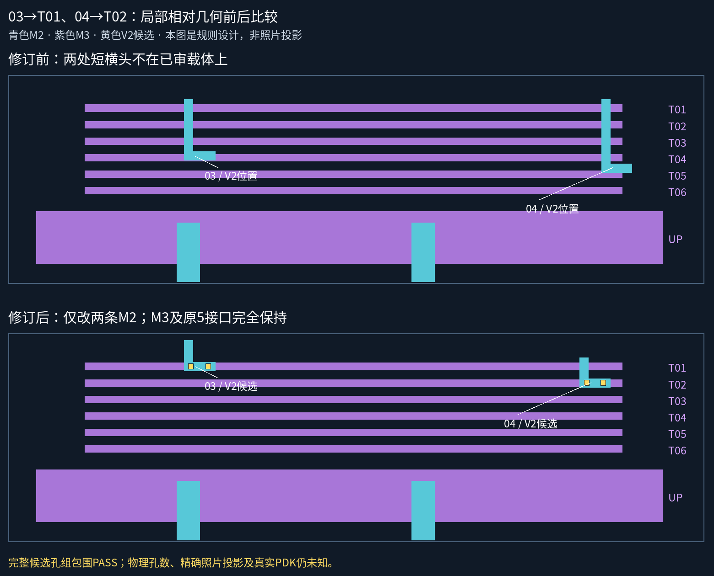
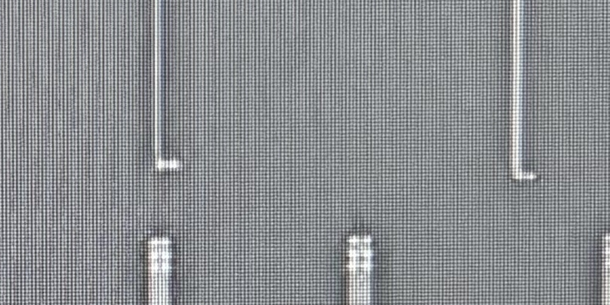

已继承用户判断03→T01、04→T02。不重复询问身份或承载。仅修订C-M2-03、C-M2-04的相对设计路径，全部M3、其他28条金属、旧5接口及34孔中心保持。新尺寸为候选，未声明照片精确配准或正式GDS采用。

| 孔组 | 承载 | 完整候选包络 | 包围检查 | 数量资格 |
|---|---|---|---|---|
| C03-V2 | C-M2-03 → C-M3-T01 | [185, 32, 211, 38] | 两层完整包围通过 | 两孔／同范围三孔均通过；物理数量未知 |
| C04-V2 | C-M2-04 → C-M3-T02 | [640, 51, 665, 57] | 两层完整包围通过 | 两孔／同范围三孔均通过；物理数量未知 |
孔径6、最小孔间距3、每侧包围1，单位为相对设计像素。检查每个显式孔和整个孔组包络加包围，不靠把孔移到竖干。相同包络的三孔备选同样通过，但不意味着照片实际是两孔或三孔。

这些照片裁片属于独立原生坐标，不将规则图直接覆盖到照片。
完整走廊工作图：图层切换、选择对象、质量分项 · 更宽来源上下文
工作模型现30金属、7个已审承载接口、38个设计候选孔。真实孔数／照片穷尽／PDK／全网仍未放行。下一步按清单核查05／06／08剩余接口。README/site/gh-pages保持。